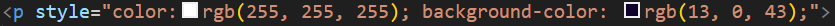

Para representar a cor de um elemento, adicione estilo e o parâmetro color:#;. Existe também o parâmetro backgroundcolor:#;, que muda a cor do fundo do elemento. Você pode declarar a cor pelo seu nome.

Você pode declarar a cor pelo seu RGB.
Você pode declarar a cor pelo seu hexadecimal.
Você pode declarar a cor pelo seu HSL (Hue, Saturation, Luminosity)